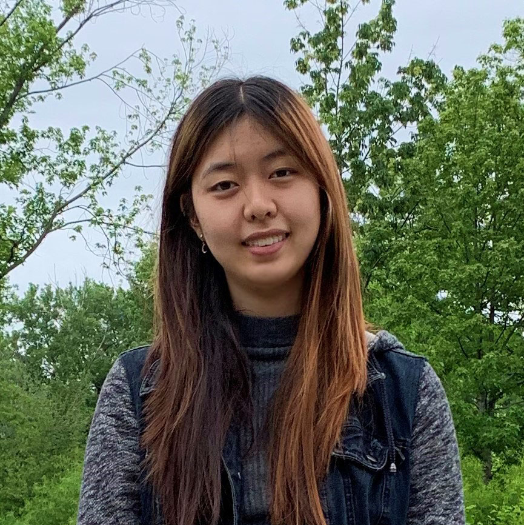

About: Camellia Guan

Hi, I'm Camellia, a TA for this summer's GWC vSIP! I am a computer science major at Cornell University's College of Engineering (and a rising sophomore!). I was part of a Girls Who Code club in high school and also attended SIP as a student myself about three years ago. I enjoy programming and working with Python, Java, and HTML/CSS.
Social Media